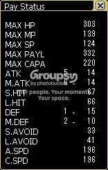
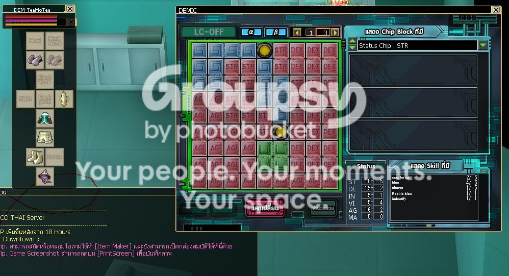

แต่ถึงกระนั้น รูปแบบวงจร มันจะสุ่มทุกครั้งที่เปิดแผงด้วยก็เถอะ เรื่องนี้เอาไว้ทีหลัง ก่อนอื่น ทำความเข้าใจพื้นฐานก่อนเลยละกัน
DEMIC - interface

ตามหมายเลข
1. Cost Limit Release หรือ พื้นที่ที่สามารถวางชิบลงไปได้
2. Limit not cost free พื้นที่ ที่ไม่สามารถวางชิบลงไปได้
3. Task engagement ( T.E. ) ชิบที่วางติดกับจุดนี้ จะมีผล x2 ทั้ง สเตตัสชิบ(Status Chip)และ สกิลชิบ(Skill Chip)
4. Commit button: เป็นปุ่มที่ใช้ เปิด/ปิด การทำDEMIC (ทุกครั้งที่เปิด ต้องใช้ 1EP)
5. Button estimate: คือปุ่มที่ใช้แสดง สเตตัสปัจจุบัน ของสเตตัสชิบ(Status Chip)ที่วาง
ตัวอย่าง

6. Chip possession: เป็นช่องแสดงชิบที่สามารถใช้วางลงในแผงวงจรได้
7. All have been equipped with skills possessed: แสดงสกิลที่ได้จากการวางสกิล(Skill Chip)ชิบลงในวงจร
8. Current status: สเตตัสปัจจุบันของตัวละคร
ตัวอย่างการวางชิบ

อ้างอิงจากคุณดลมาก่อนเลยละกัน(ผู้บุกเบิก)
Donlanai เขียน:ว่าด้วยเรื่อง DEM เล็กน้อย
DEM ใช้ EP ในการอัพ Level ยิ่งเลเวลสูง ช่องใส่ chip ก็จะมากขึ้น
ใช้ EXP ในการซื้อ Status chip (STR DEX AGI INT VIT MAG)
ใช้ Job EXP ในการซื้อ Skill chip (แบ่งเป็นสกิลทั่วไป, Figher, Spell user, Backpacker)
ใช้ทั้งสองอย่างในการซื้อ Limitation Chip (คล้าย job bonus ของแต่ละอาชีัำพ ใส่ได้อันเดียว)
ได้ chip มาแล้วก็ยัดใส่วงจร
การเปิดวงจรเพื่อใส่ chip แต่ละครั้งใช้ 1 EP ดังนั้นควรเปิดให้น้อยครั้งแต่ใส่ให้มากชิ้นเข้าไว้
EP ได้มายังไง ?
1. ทักทาย วันนึงทำได้ 1 ครั้ง ได้ 1 EP + (จำนวนคนใน Friendlist หาร10)
2. Login วันนึงเพิ่มได้ 1 ครั้ง ได้ 10 EP
3. ทำเควส EP ได้ที 5-10 EP
4. ส่งเควสทั่วไป ได้ 1 EP ต่อครั้ง*แก้ที่เข้าใจผิดเล็กน้อย*
เลเวล DEM จะอัพทุกๆ 4 Cost Limit (CL) โดยได้จากการใส่ EP ลงไป เช่นถ้ามันเขียนไว้ว่า 0/3 เท่้ากับว่าต้องใส่ EP 3 แต้มถึงจะเพิ่ม CL 1 แต้ม
อ้อ ตอนใส่ chip บางครั้งที่เปิดวงจร มันจะมีวงเหลืองๆโผล่มาด้วย นั่นคือ Engage task (ET) นะ มีผลดังต่อไปนี้
1. status chip ทุกชนิดที่อยู่ติดกับ ET จะแสดงผล x2 เช่นมีชิพ mag +3 แล้ววางไว้ติดกับวงเหลืองนี่ จะได้เป็น mag+6
2. skill chip ทุกชนิดที่วางติด ET จะ +1 เลเวล เช่นวาง Fire bolt +1 ไว้ก็จะได้ Fire bolt +2
ET จะสุ่มโผล่ทุกครั้งที่เราเปิดวงจรเพื่อใส่ chip ส่วนมากจะไม่โผล่หรอก แต่ถ้าโผล่ก็จะมีสูงสุดได้ 2 จุดเท่านั้น


 แต้งกิ้วมากฮะป้าโม
แต้งกิ้วมากฮะป้าโม